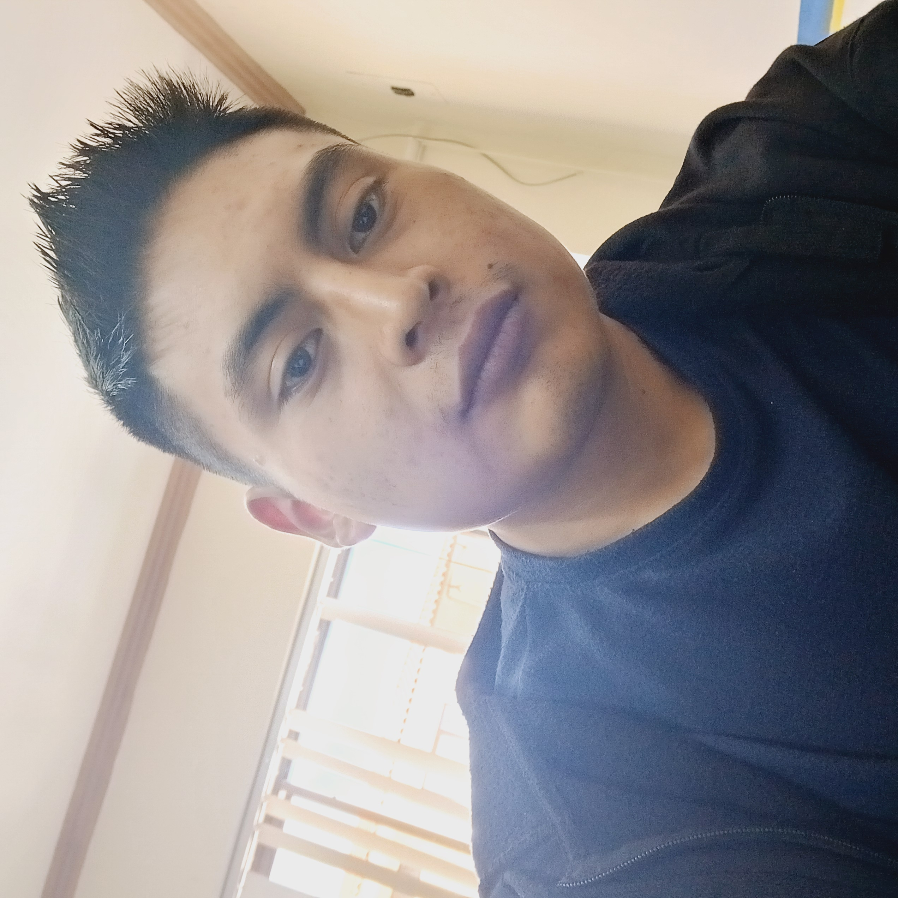

Bachiller en Ciencias
Unidad Educativa Miguel Díaz, Quito
2020

Estudiante - Tecnólogo - Investigador
University of Quevedo - Ecuador
ContactarmeSoy Juan Yanza baachiller en Ciencias Básicas en la ciudad de Quito y con tecnología en ciberseguridad, actualmente me encuentro reforzando mis conocimientos y habilidades estudiando una carrera en Sistemas de Información.
Unidad Educativa Miguel Díaz, Quito
2020
Instituto Superior Alquimia, Cuenca
2025
Estudiante
University of Quevedo, Ecuador
2026
Identificación y documentación de procesos
Julio - Octubre 2023
Creación de sitios web básicos estáticos para tiendas pequeñas
2026
Email: jyanzal@uteq.edu.ec
Email alternativo: jyanzal@uteq.edu.ec
Teléfono: (+593) 0967872529
GitHub: JuanYanza
Ver proyectos